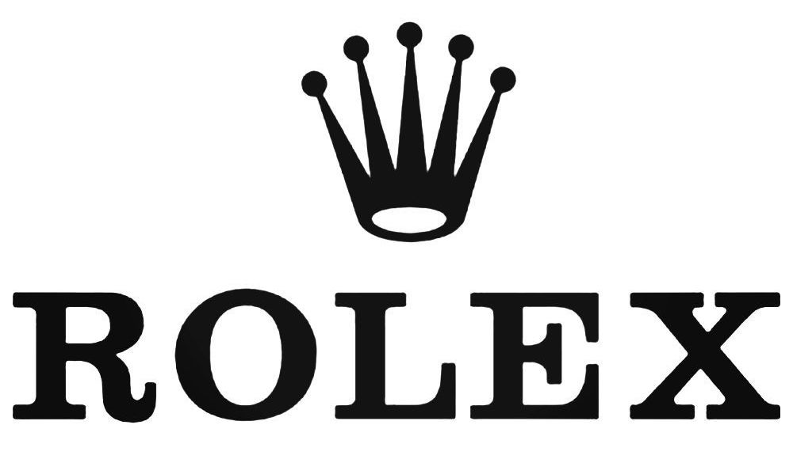
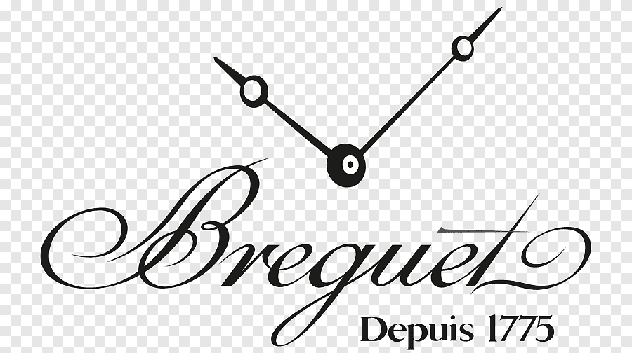
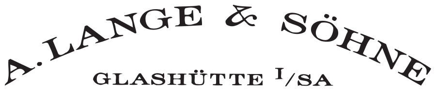

Why a Watch?
Your phone tells the time. So does your microwave, your car dashboard, and the corner of every screen you look at. A mechanical watch does the same thing — worse, actually. It loses a few seconds a day. It costs more than a motorcycle. And it needs servicing every five years. So why does anyone bother?
Because a mechanical watch is one of the last objects that does something genuinely difficult with zero electricity. Inside a case the size of a biscuit, over 200 parts work together — gears, springs, jewels, a balance wheel oscillating eight times a second — to measure time through pure mechanics. No chip. No battery. Just physics and craft.
It's also one of the very few luxury objects a man actually wears every day. A car sits in a parking lot. A suit hangs in a closet. A watch is on your wrist through meetings, flights, weekends, everything. It's the most visible thing you own that nobody asked you to buy.
Then there's the money angle. Certain watches — not all, but certain ones — hold their value or appreciate. A Rolex Submariner bought ten years ago is worth more today than what was paid for it. A Patek Philippe Nautilus has doubled. This isn't guaranteed and it isn't the reason to buy, but it's real. Few luxury purchases can say the same.
And there's something else. Owning a mechanical watch connects you to a tradition that's over 500 years old. Before quartz, before electronics, before everything — people figured out how to measure time with tiny springs and wheels. That knowledge has been refined, generation after generation, into what sits on your wrist today. You're wearing a piece of that continuity.
None of this is necessary. That's the point. A watch is one of the few purchases where the impracticality is the entire argument.
Stories Worth Knowing
Six watches. Six moments that changed the game.
Omega Speedmaster
NASA tested 11 watches in 1965, only the Speedmaster passed. Worn on every crewed NASA mission since. Buzz Aldrin wore his on the moon. Still in production, barely changed.
Audemars Piguet Royal Oak
Gerald Genta designed it in one night in 1972 after a last-minute call from AP. Stainless steel, visible screws, octagonal bezel — it looked industrial. They priced it the same as gold watches. It sold. Changed everything about what luxury could look like.
Cartier Santos
Alberto Santos-Dumont, a Brazilian aviator and friend of Louis Cartier, complained he couldn't read his pocket watch while flying. Cartier made him a wristwatch in 1904. It became the first practical men's wristwatch. The Santos is still made today.
Cartier Crash
A Cartier Baignoire was reportedly warped in a car fire in London in 1967. Someone at Cartier looked at the melted case and saw a new shape. They put it into production. The Crash became one of the most distinctive watch designs ever made.
Rolex Submariner
Built for divers in 1953, waterproof to 100m. Sean Connery wore one as James Bond. It crossed over from tool watch to cultural icon in a way almost nothing else has. Every diver watch made today exists in its shadow.
Patek Philippe Calatrava
Launched in 1932. Thin, round, no complications, clean dial. Barely changed in over 90 years. The argument it makes is that perfection doesn't need updating. Hard to argue with.
Dictionary
Everything you need to know, grouped by what it actually relates to.
How a Watch Works
The basics of what's actually happening inside the case
Types of Movements
Automatic, hand-wound, quartz — what's the difference and why it matters
Complications
Everything a watch does beyond telling the time
The Case & Dial
What you see and touch — the physical anatomy of a watch
Straps & Bracelets
What holds it on your wrist, and why it changes the whole look
Watch Styles
Dress watch, diver, pilot, field — the categories and what they're built for
Finishing & Craft
The details that separate a ₹5 lakh watch from a ₹50 lakh one
Brands
Who owns whom, and why it matters more than you'd think.
Ownership Map
RICHEMONT
SWATCH GROUP
LVMH
ROLEX GROUP
KERING
INDEPENDENT
"Why does this matter? Groups share R&D, movements, and sometimes factories. A ₹2 lakh Tissot and a ₹15 lakh Omega share more DNA than you'd think."
The Brands

The one everyone recognises. Holds value better than most assets.
Price range: ₹5L – ₹50L+
Start with: Oyster Perpetual 36, Explorer I
Sourcing: Hard — waitlists for popular models run years. Grey market premiums are steep.
Indian connect: Virat Kohli (Daytona), MS Dhoni (collector with 10+ pieces)
Old money that doesn't need to show off. Bought to pass down.
Price range: ₹20L – ₹10Cr+
Start with: Calatrava 5196, Aquanaut 5167
Sourcing: Very Hard — allocated models require purchase history. Even entry pieces can have waitlists.
Indian connect: Mukesh Ambani (known Patek collector, Nautilus, Grand Complications)
The flex watch for people who know watches.
Price range: ₹15L – ₹5Cr+
Start with: Royal Oak 15500, Royal Oak Offshore
Sourcing: Very Hard — the Royal Oak is one of the most allocated watches in the world.
Indian connect: Hardik Pandya (Royal Oak Offshore), Ranveer Singh

NASA's choice. Bond's choice. A serious watch at a reachable price.
Price range: ₹4L – ₹30L
Start with: Speedmaster Moonwatch, Seamaster 300M
Sourcing: Easy — widely available at ADs. No waitlists on most models.
Indian connect: Ranbir Kapoor (brand ambassador)
Rolex's younger sibling. Same quality obsession, without the waitlist drama.
Price range: ₹2L – ₹5L
Start with: Black Bay 58, Pelagos 39
Sourcing: Easy — available at Rolex/Tudor ADs. Good stock on most pieces.
Engineer's watches. Built for function first, look incredible doing it.
Price range: ₹5L – ₹30L
Start with: Portugieser Automatic, Pilot's Mark XX
Sourcing: Easy — widely available. Good AD network in India.
Indian connect: Sachin Tendulkar (long-time IWC wearer)

Where watchmaking meets jewellery. The Santos changed wristwatches forever.
Price range: ₹3L – ₹50L+
Start with: Santos Medium, Tank Must
Sourcing: Moderate — popular steel models can have short waits. Precious metal is readily available.
The watchmaker's watchmaker. Supplies movements to half the industry.
Price range: ₹5L – ₹40L
Start with: Reverso Classic, Master Ultra Thin
Sourcing: Moderate — most models available, but popular Reversos move fast.
Loud, modern, unapologetic. Either you get it or you don't.
Price range: ₹8L – ₹1Cr+
Start with: Classic Fusion 42, Big Bang Steel
Sourcing: Easy — good availability, strong AD presence in metros.
Indian connect: Floyd Mayweather, Usain Bolt (global icons seen wearing them in India events)
Racing DNA. The entry point into Swiss luxury for a lot of people.
Price range: ₹1.5L – ₹15L
Start with: Carrera Date 36, Aquaracer 300M
Sourcing: Easy — one of the widest AD networks in India. Walk in and buy.
Indian connect: Shah Rukh Khan (long-time brand ambassador)
Three Bridges, Laureato, and a history that most people haven't discovered yet.
Price range: ₹8L – ₹50L+
Start with: Laureato 42mm, 1966 Date
Sourcing: Moderate — limited AD presence in India. May need to source from Dubai or Europe.
The oldest watch manufacture in continuous operation since 1755.
Price range: ₹8L – ₹5Cr+
Start with: Overseas 4500V, Fiftysix
Sourcing: Moderate — available at ADs but not every model in stock in India.
Masters of ultra-thin. Some of the thinnest movements ever made.
Price range: ₹5L – ₹3Cr+
Start with: Altiplano Origin, Polo
Sourcing: Moderate
Swiss independent. Equal parts watchmaker and jeweller.
Price range: ₹3L – ₹2Cr+
Start with: L.U.C XPS, Alpine Eagle
Sourcing: Moderate — good AD presence in India.

Invented the tourbillon. Napoleon owned one. Need we say more.
Price range: ₹5L – ₹5Cr+
Start with: Classique 5177, Type XX
Sourcing: Moderate
Worth Knowing About
A step beyond the usual names — for when you're ready to go deeper.
Watches for Formula 1 drivers and tennis champions. Literally.
Range: ₹80L – ₹20Cr+
Start with: RM 011
Sourcing: Very Hard — waitlist, relationships required.
One of the last true independent watchmakers. Makes everything himself.
Range: ₹20L – ₹5Cr+
Start with: Chronomètre Bleu, Octa Automatique
Sourcing: Very Hard — very limited production, long waits.

German watchmaking at its absolute peak. The anti-Swiss Swiss watch.
Range: ₹15L – ₹5Cr+
Start with: Lange 1, Saxonia Thin
Sourcing: Hard — limited India AD presence, often need to buy abroad.
Japanese finishing that rivals anything from Switzerland at a fraction of the price.
Range: ₹2L – ₹20L
Start with: SBGA211 Snowflake, SBGW231
Sourcing: Moderate — available online and through select retailers.
Where haute horlogerie meets spectacle. No restraint whatsoever.
Range: ₹30L – ₹50Cr+
Start with: Twin Turbo Furious, Astronomia
Sourcing: Hard — boutique only, limited India presence.
Marine chronometers and avant-garde complications since 1846.
Range: ₹5L – ₹3Cr+
Start with: Marine Torpilleur, Freak X
Sourcing: Moderate
The oldest Swiss watch brand. Invented the modern dive watch.
Range: ₹5L – ₹5Cr+
Start with: Fifty Fathoms Bathyscaphe
Sourcing: Hard — limited India AD presence.
Built for Italian Navy divers. Oversized, bold, unmistakable.
Range: ₹3L – ₹3Cr+
Start with: Luminor Marina PAM01392
Sourcing: Moderate — available at ADs in major Indian cities.
Budget
What your money actually buys at every level.
₹1L – 5L
Entry LuxuryThis is where you stop buying a timekeeper and start buying a watch. At this range you get Swiss movements, sapphire crystals, and finishing that you can actually see and feel. Brands like Tissot, Longines, Hamilton, and the lower end of Omega (pre-owned) live here.
What you're paying for: real mechanical movements (or high-end quartz), solid build quality, sapphire crystal, 100m+ water resistance. Most of these watches will last decades with regular servicing.
Look at: Tissot PRX Powermatic 80 (~₹1L), Longines Spirit (~₹2L), Hamilton Khaki Field (~₹80K), TAG Heuer Carrera Date (~₹2.5L)
Honest caveat: You're not getting in-house movements or high-end finishing at this level. Movements are mostly ETA/Sellita — reliable but shared across dozens of brands. That's fine. The watch will still outlive your phone by two decades.
₹5L – 20L
The Sweet SpotThis is where most serious first-time buyers land, and honestly, it's the most satisfying range. You get in-house movements, exceptional finishing, and watches with genuine heritage behind them. Omega, Tudor, IWC entry, Grand Seiko — the quality jump from the tier below is enormous.
At ₹10L+ you start seeing COSC chronometer certification, silicon hairsprings, 70-hour power reserves, and finishing that holds up under a loupe. These are watches that people who know watches will recognise and respect.
Look at: Omega Speedmaster Moonwatch (~₹6L), Tudor Black Bay 58 (~₹3.5L), Grand Seiko SBGA413 (~₹5L), IWC Pilot Mark XX (~₹6L)
Honest caveat: Resale value is mixed. Omega and Tudor hold well. Grand Seiko less so in India (lack of brand awareness). Don't buy here expecting an investment — buy because you'll wear it for 20 years.
₹20L – 1Cr
Waitlists Begin HereThis is where the game changes. Rolex, AP entry models, JLC, Panerai — you're buying something that can genuinely outlive you. Movements are in-house, finishing is hand-done, and the brands have centuries of history. You're also entering the world of allocation and waitlists.
The watches here have genuine resale value. A steel Rolex at retail is worth more the moment you walk out of the AD. A JLC Reverso will hold 60-70% over a decade. These are objects that get passed down.
Look at: Rolex Submariner (~₹8.5L retail), Rolex Datejust (~₹7.5L), JLC Reverso Classic (~₹7L), Cartier Santos Medium (~₹6L)
Honest caveat: Getting a popular Rolex at retail requires either years of relationship-building with an AD or luck. Grey market prices run 50-200% above retail on desirable references. Be realistic about what you can actually walk in and buy.
₹1Cr+
You're Not Just Buying a WatchPatek Philippe, Richard Mille, bespoke commissions, grand complications. At this level you're buying assets. Some are investments. Some are just insane feats of engineering that happen to tell the time. A Patek Perpetual Calendar has mechanisms that won't need adjustment until 2100. A Richard Mille RM 011 weighs less than a paper napkin.
This is also where anonymity ends. If you're spending a crore on a watch, the brand knows who you are. The AD knows your history. Allocation isn't a waitlist — it's a relationship built over years and serious spend.
Look at: Patek Philippe Nautilus 5711 (if you can get one), AP Royal Oak 15500, Richard Mille RM 035, Vacheron Constantin Overseas
Honest caveat: The gap between retail and grey market at this level can be ₹20-50 lakhs. Insurance becomes mandatory. Servicing costs ₹1-3 lakhs every 5 years. This isn't just a purchase — it's a commitment.
India Guide
How to actually buy a watch in India — and whether you should buy one abroad.
Buying in India
For new watches, authorised dealers only. No exceptions. Grey market for new watches in India is murky, and warranty matters. Here are the ADs that stock serious brands:
Kapoor Watch Co
Mumbai — one of India's oldest luxury watch retailers. Rolex, Patek, AP.
Johnson Watch Co
Delhi — strong Rolex and Omega presence. Long-standing AD relationships.
Ethos Watch Boutiques
Pan India — the largest multi-brand luxury watch retailer in the country. Listed company.
Art of Time
Mumbai — carries independent brands others don't. Good for JLC, IWC, Hublot.
Be honest with yourself: Indian AD stock is limited compared to Europe, Dubai, or Hong Kong. ADs here have less leverage with brands for allocated watches. If you want a steel Rolex Daytona from an Indian AD, you're probably not getting one without significant purchase history.
Should You Buy Abroad?
Switzerland / Europe
The source. RRP pricing, VAT refund possible.
Buying at the source means retail pricing with potential VAT refund of 7-8%. The full AD experience — walking into a boutique in Geneva or Zürich is something else entirely. Best for high-value pieces where VAT savings are significant.
Dubai
No import duty, massive grey market, Indian-friendly.
Zero import duty on watches. Massive grey market alongside ADs. Every brand has presence. Dubai is comfortable for Indian buyers — language, currency exchange, and direct flights from every metro. The Dubai Shopping Festival often brings additional AD discounts.
Hong Kong
Zero duty, excellent ADs, strong grey market.
Zero duty on watches. Some of the best AD networks in Asia. The grey market in Tsim Sha Tsui is legendary — dozens of dealers within walking distance. English-friendly. Prices are often the best in Asia for popular steel sport watches.
Japan
Yen weakness = great deals. Incredible grey market.
The weak yen makes Japan one of the best places to buy watches right now. The grey market in Ginza and Shinjuku is world-class — meticulous condition grading, full sets, competitive prices. Tax-free shopping for tourists on purchases over ¥5,000.
The Customs Reality
The duty-free allowance for goods brought into India is ₹50,000. Anything above that value is technically declarable. The applicable duty on watches — customs duty plus GST — runs roughly 30-40% of the declared value. On a ₹10 lakh watch, that's ₹3-4 lakhs in duty.
Many people bring watches in undeclared. That's the reality. Some get through. Some don't. The risk: seizure of the watch, full duty, plus penalties that can run up to 100% of the duty amount. Indian customs has become significantly more sophisticated — X-ray screening, random checks, and access to purchase databases at airports.
The math is simple. If you're saving ₹2 lakhs by buying abroad but risking ₹6 lakhs in penalties, the expected value isn't in your favour. Factor customs into your buying-abroad calculation honestly. Sometimes buying from an Indian AD — even at a premium — is the smarter play.
Grey Market & Buying Online
Grey market means watches sold outside the authorised dealer network. They're genuine watches — not fakes — but they come without the manufacturer's warranty. Instead you get a dealer warranty, typically 1-2 years. The trade-off: you can get watches that are unavailable at ADs, often at different (sometimes lower, sometimes higher) prices.
The global grey market is mature and generally trustworthy if you use established platforms. India's grey market is less structured — mostly personal networks, Instagram dealers, and WhatsApp groups. Authentication is on you. Buyer beware.
One of One
When a production watch isn't enough.
A bespoke commission is exactly what it sounds like — a watch made for one person, to their specifications, by a brand that normally produces for the public. It's the final level. Beyond retail, beyond allocation, beyond vintage. A brand takes its movement, its craft, its centuries of expertise, and builds something that will never be repeated.
Why do brands do it? Because the people who commission these pieces are their most important clients. Bespoke is how brands say "you matter" in a language that goes beyond marketing. It's also, frankly, a flex that money alone can't buy — because money is table stakes at this level. What matters is the relationship.
Here are six commissions that became legendary.
Rafa Nadal × Richard Mille RM 27
Built to withstand 5,000Gs — the force generated by a Nadal tennis serve. The case weighs under 20 grams. He wears it during every match. It costs more than a house.
Drake × Patek Philippe
Custom dial, personal iconography. Patek does this for very few people. When they do, it means the client has spent years — and serious money — building a relationship with the maison. The result is a watch that exists nowhere else.
Usain Bolt × Hublot
An ongoing relationship across multiple commissions. Big Bang cases in Jamaican sprint colours. Hublot built their entire "art of fusion" philosophy around collaborations like this — loud, proud, and unmissable.
Jacob & Co × Arab Royalty
The Astronomia. A miniature solar system rotating inside a sapphire case. Extreme mechanics as jewellery. Built for clients with no ceiling — people for whom price is genuinely not a variable in the decision.
Bugatti × Jacob & Co Chiron Tourbillon
A Bugatti W16 engine recreated in miniature inside a watch case. 578 components. The crankshaft spins. The pistons move. Engineering as obsession, compressed into something you wear on your wrist.
Girard-Perregaux × Aston Martin
The iconic Three Bridges movement reimagined for a collaboration that most people don't know exists yet. Racing green ceramic, British-Swiss engineering, and a bridge design from 1860 updated for a car brand from the future.
"How do you get one made? You don't ask. You build a relationship with a brand over years, spend seriously, and eventually the conversation happens the other way around. They come to you."